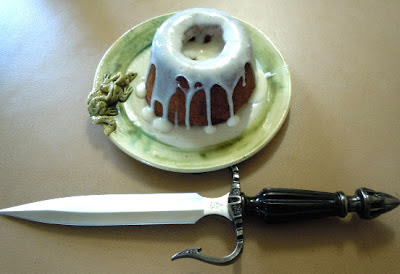

Sweet Rolls from Skyrim
Home
Description
In honor of what many geeks consider to be the best game of 2011, I asked you guys which Skyrim food I should make a recipe for, and you guys chose the sweetroll! Although there's a plethora of interesting foods in Skyrim, I really wasn't surprised that sweetrolls won. The appearance of sweetrolls in Bethesda games has been a running gag for most of the developers run, appearing in all of the games in the Elder Scrolls series, as well as Fallout 3. They look different from game to game, taking on a very large mountainous shape in Skyrim. I pondered at how to achieve the most accurate size and shape for these delicious treats without anyone having to purchase any special mold. I found that the best way to Fus Ro Dah yourself up some sweetroll is to bake the rolls in a glass measuring cup, so you'll need an oven-safe 16oz measuring cup (such as Pyrex) to do this. It is never really divulged what ingredients are in a sweet roll but most would agree that it seems to be similar to a cinnamon bun. I went with a simple cinnamon bun coffee cake recipe with cream cheese icing, and it is delicious. I suggest baking them on your day off before you begin playing for 15 hours straight and ignoring everything else you probably should be doing. I used to play Skyrim for 15 hours straight, until I took an arrow... OKAY, I won't. Make sure no one steals your sweetroll!
Source: GeekyChef.com
Ingredients
- For the Cake
- -1 1/2 cups flour
- -1/2 cup sugar
- -1/3 cup milk
- -1 egg
- -2 tsp vanilla extract
- -2 tsp baking powder
- -pinch of salt
- -2 tbsp cinnamon
- -1/4 cup butter, melted and cooled (plus more for greasing)
- For the Filling
- -1/4 cup butter, softened
- -1/4 cup brown sugar
- -1 tbsp cinnamon
- 1/2 cup chopped pecans
- For the Icing
- 1/4 cup cream cheese, softened
- 2 tbsp milk
- 1 1/2 cups powdered sugar
Steps
- Preheat the oven to 350°F
- In a large mixing bowl, sift together the flour, sugar, baking powder, cinnamon, and a pinch of salt.
- In a separate bowl, whisk together the milk, egg, and vanilla extract.
- Add the wet ingredients to the dry ingredients, mixing just until fully combined and smooth.
- Stir in the melted butter.
- Grease 2 oven-safe glass measuring cups generously with butter. Add the batter to the measuring cup to the 1 cup or the 1 1/2 cup line, depending on how tall you want the sweetrolls.
- Bake for 30 minutes in the center rack or until a knife inserted into the center comes out clean.
- Remove the measuring cups from the oven and let the cakes cool completely while still in the measuring cup.
- Once cool, carefully remove the cakes from the measuring cup, keeping it upside down with the wider side at the bottom. If necessary, trim the rounded bottom of the cake to level it.
- Transfer the cakes, leveled side down, onto your serving plate.
- To make the filling, combine butter, brown sugar, cinnamon, and chopped pecans in a bowl. Carve a hole into the top of the cake to create space for the filling, and stuff the filling mixture into the hole you carved.
- For the icing, whisk together cream cheese, milk, and powdered sugar until smooth and thick. Pour the icing gently over the top of the cake.
Makes 2 large Sweet Rolls